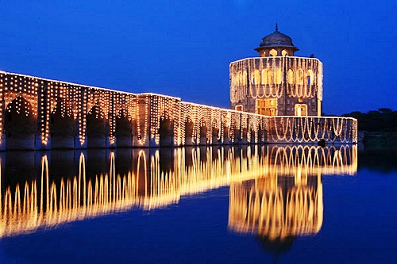

<div class="portfolio-single-load clearfix">
    <div class="custom-full-width-box">
        <div class="custom-container">
            <div class="custom-row align-items-center">
                <div class="custom-image-column">
                    
                </div>
                <div class="custom-text-column">
                    <h2 class="custom-heading">Hiran Minar</h2>
                    <p class="custom-paragraph">
                        Situated in Sheikhupura, Hiran Minar is a unique historical monument built by Emperor Jahangir in the early 17th century. The minaret, adorned with intricately carved stone panels, was constructed in memory of Jahangir's beloved pet deer, Mansraj. Surrounding the minaret is a picturesque complex with a large artificial lake, pavilions, and gardens, creating a serene and idyllic retreat. Hiran Minar's architectural beauty and historical significance make it a popular destination for tourists and history enthusiasts, offering a glimpse into the Mughal era's artistic and cultural legacy.

                    </p>
                </div>
            </div>
        </div>
    </div><!-- .custom-full-width-box end -->

</div><!-- end single-project -->
